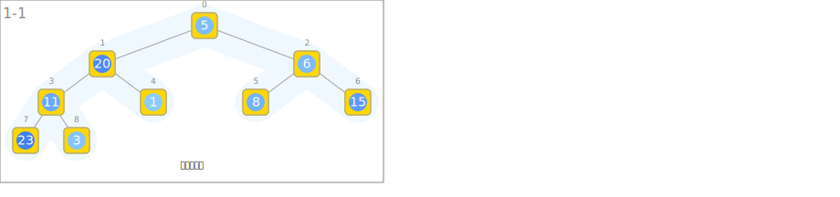
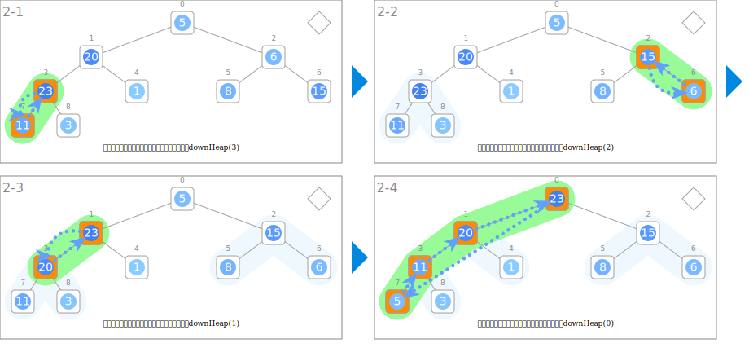
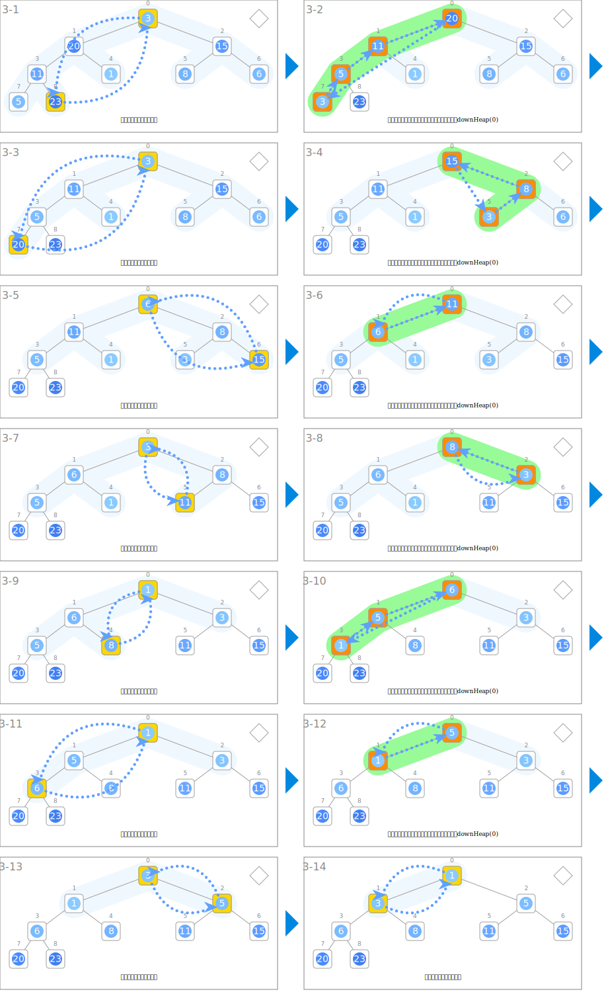
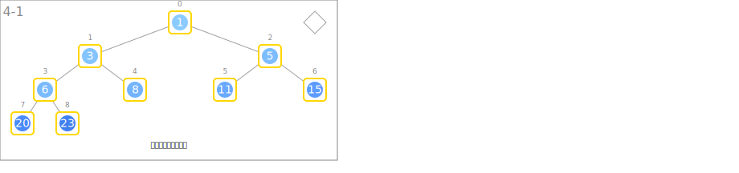

符号
| 数据 | ||
|---|---|---|
 |
数列の列 | A |
| 输入 | ||
|---|---|---|
 |
输入整数列 | |
| 构建堆 | ||
 |
对子树进行向下调整堆 | downHeap(A, i) |
| 交换和向下调整堆 | ||
|
从根节点开始进行向下调整堆 | downHeap(A, 0) |
 |
交换根节点和末尾节点的值 | swap(A[0], A[heapSize-1]) |
 |
缩小满足堆条件的未排序部分的区间 | 区间[0, heapSize) |
| 输出 | ||
 |
输出已排序的整数列。 | |
动画
输入

构建堆

交换和向下调整堆

输出
